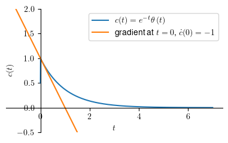
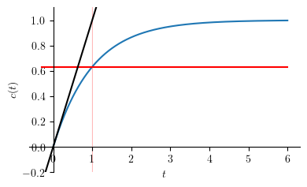
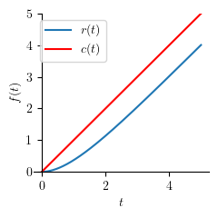

First-order systems#
Required imports#
from IPython.core.display import HTML
import numpy as np
import matplotlib.pyplot as plt
plt.rcParams.update({
"text.usetex": True,
"font.family": "Helvetica",
"font.size": 10,
})
from sympy import *
from sympy.plotting import plot
from sympy.abc import x, y
from mathprint import *
Preparations#
Define variables that we are going to use repetitively: \(s, t, \tau\). We also need to define specific prpoperties of the variables.
t = symbols('t', real=True)
s = symbols('s', complex=True)
tau = symbols('tau', real=True)
The original laplace transformation functions are a little too long. We will simplify the laplace and the inverse laplace transformation functions, as follows.
laplace_transform(f, t, s, noconds=True)aslaplace(f)inverse_laplace_transform(F, s, t)asilapalce(F)
def laplace(f):
F = laplace_transform(f, t, s, noconds=True)
return F
def ilaplace(F):
f = inverse_laplace_transform(F, s, t)
return f
Special functions in SymPy#
We will use these two special functions very often:
\(\delta(t)\) is an impulse function or a Dirac Delta function
\(\theta(t)\) is a step function or a Heaviside function
First-order system equation#
A first-order system:
G = 1 / (tau*s + 1)
mprint('G(s)=\\frac{C(s)}{R(s)}=', latex(G))
Here \(R(s)\) and \(C(s)\) are the input and output functions in \(s\)-domain, respectively. In time-domain, they become \(r(t)\) and \(c(t)\), respectively. The first order coefficient ( \(\tau\) ) is better known as the time constant.
Unit-impulse response#
What we do here:
define the input, which is a unit impulse function (Dirac Delta function)
r = DiracDelta(t)
mprint('r(t)=', latex(r))
compute its Laplace form
R = laplace(r)
mprint('R(s)=', latex(R))
apply the input to the sytem and obtain the output
C = G*R
mprint('C(s)=', latex(C))
compute the inverse Laplace of the output
c = ilaplace(C)
mprint('c(t)=', latex(c))
For plotting the response, let us set \(\tau = 1\).
tau_ = 1
c1 = c.subs(tau, tau_)
p1 = plot(c1, (t, 0 , 7), ylim=[-0.5, 2], size=(4, 2.5), ylabel='$c(t)$', show=False, legend=True)
p2 = plot(-1/tau_**2*t + 1/tau_, (t, -1 , 7), show=False, legend=True)
p1[0].label = '$c(t)='+latex(c1)+'$'
p2[0].label = "gradient at $t=0$, $\\dot{c}(0)=-1$"
p1.append(p2[0])
p1.show()

Two interesting informations that we can extract from the response plot above are:
output value at \(t=0\) or \(\lim_{t \to 0} c(t)\)
limit(c, t, 0) # c(0)
output gradient at \(t=0\) or \(\lim_{t \to 0}\frac{\mathtt{d}c}{\mathtt{d}t}\)
limit(diff(c, t), t, 0) # output gradient at t = 0
Thus we can summarize, for unit-impulse output \(c(t)\):
$\(c(0) = \frac{1}{\tau}\)\( and \)\(\dot{c}(0) = -\frac{1}{\tau^2}\)$
Unit-step response#
What we do here:
define the input, which is a unit step function (Heaviside function)
t = symbols('t', real=True, positive=True)
r = Heaviside(t)
mprint('r(t)=', latex(r))
compute its Laplace form
R = laplace(r)
mprint('R(s)=', latex(R))
apply the input to the sytem and obtain the output
C = G*R
mprint('C(s)=', latex(C))
compute the inverse Laplace of the output
c = ilaplace(C)
mprint('c(t)=', latex(c))
For plotting, let us set \(\tau = 1\).
tau_ = 1
c1 = collect(c.subs(tau, tau_), Heaviside(t))
mprint("c(t)=", latex(c1))
tend = 6
p1 = plot(c1, (t, 0, tend), ylim=[-0.2, 1.1], size=(4, 2.5), ylabel='$c(t)$', show=False)
p2 = plot_implicit(Eq(t, tau_), (t, -0.1, tend), line_color='r',show=False) # vertical line at t = tau
p3 = plot(c1.subs(t, tau_), (t, -0.3, tend), line_color='r', show=False) # horizontal line at c(tau)
p4 = plot(tau_*t, (t, -0.3, tend), line_color='k', show=False) # gradient at t = 0
p1.append(p2[0])
p1.append(p3[0])
p1.append(p4[0])
p1.show()

The figure above shows that at \(t = \tau\), \(c(\tau)\) is at \(63.21 \%\) of \(c_{ss}\)
output value at \(t=\tau\) or \(c(\tau)\)
c1.subs(t,tau) # c(t = tau)
output gradient at \(t=0\) or \(\lim_{t \to 0} \frac{\mathtt{d}c}{\mathtt{d}t}\)
limit(diff(c, t), t, 0).evalf() # gradient at t = 0
Unit-ramp response#
What we do here:
define the input, which is a unit ramp function
r = t * Heaviside(t)
mprint('r(t)=', latex(r))
compute its Laplace form
R = laplace(r)
mprint('R(s)=', latex(R))
apply the input to the sytem and obtain the output
C = G*R
mprint('C(s)=', latex(C))
compute the inverse Laplace of the output
c = collect(ilaplace(C), Heaviside(t))
mprint('c(t)=', latex(c))
For plotting, let us set \(\tau = 1\).
tau_ = 1
c1 = collect(c.subs(tau, tau_), Heaviside(t))
mprint("c(t)=", latex(c1))
tend = 5
p1 = plot(c1, (t, 0, tend), ylim=[-0, 5], size=(2.5, 2.5), show=False, legend=True)
p2 = plot(r, (t, 0, tend), line_color='r', show=False, legend=True)
p3 = plot_implicit(Eq(t, tend), (t, 0, tend), (y, r.subs(t, tend), c1.subs(t, tend)), line_color='g', show=False)
p1[0].label = '$r(t)$'
p2[0].label = '$c(t)$'
p1.append(p2[0])
p1.append(p3[0])
p1.show()

As we can see from the response plot above, there is a constant difference betwwen the input and the output (thin vertical green line). This constant difference can ba expressed as:
delta = limit(s*laplace(r) * (1 - G), s, 0)
mprint('\\Delta=', latex(delta))